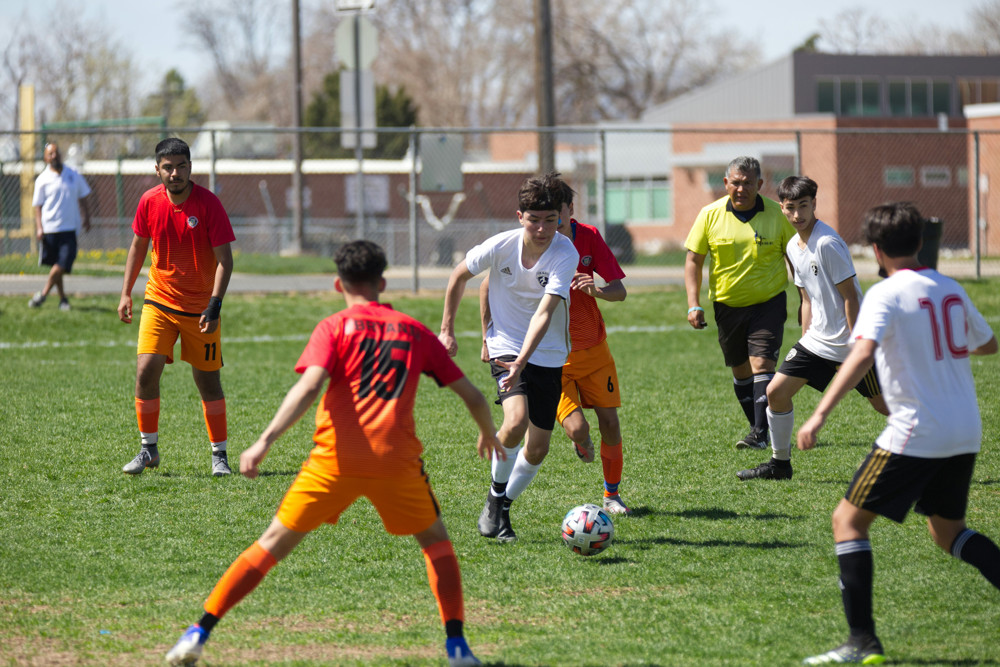

text
text

2nd Sundays Cobbs Creek Park Clean-up
Baltimore Ave & 61st St
December 10th
2:00pm – 4:00pm
Every 2nd Sunday at 2 pm, volunteer Larry Szmulowicz leads volunteers in cleaning up Cobbs Creek Park along the creek path starting at 61st St & Baltimore Ave. All tools and materials will be provided, including work gloves. Please wear long pants and closed-toe shoes. Regarding Covid safety protocols, the large area will facilitate distancing. Bring your own mask. Please email Larry at LarryCobbsCreek@gmail.com to sign up and for more information. Thanks for your help.